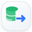

Meu Dinheiro
Menu central das versões, diagnóstico e ferramentas de recuperação.
Links principais

Copiar dados do Oficial para testesAbre as ferramentas da Beta. A cópia permitida é somente Oficial → Beta.›Dados protegidosOficial e Beta usam bancos locais diferentes. Recuperação e modo seguro também respeitam essa separação.